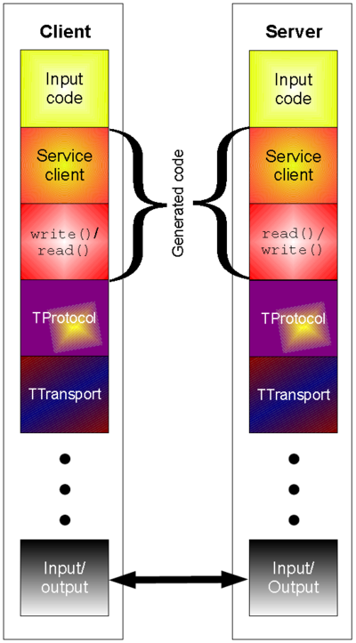
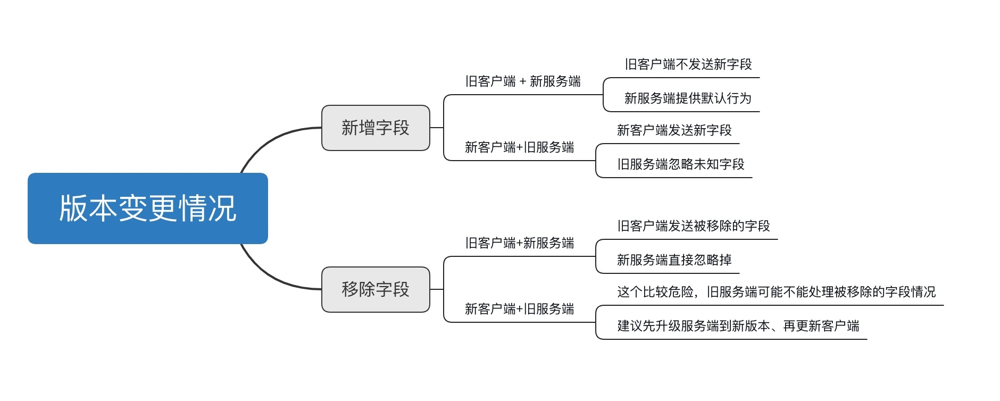

引言
知乎使用的 RPC 框架是基于 Thrift 构建的。自然就很有必要了解下 Thrift 是什么？如何使用？以及有什么最佳实践？
Thrift 官方是这样介绍自己的：
Thrift is a software framework for scalable cross-language services development. It combines a software stack with a code generation engine to build services that work efficiently and seamlessly between C++, Java, Python, PHP, Ruby, Erlang, Perl, Haskell, C#, Cocoa, JavaScript, Node.js, Smalltalk, and OCaml.
以下是 Thrift 协议栈示意图：

Input Code：是依照 Thrift 语法编写的服务（包含变量、服务方法、异常等定义）Generated Code：使用thrift gen编译生成的指定某种语言的客户端代码，以便于在业务中调用服务的 RPC 接口Service Clientwrite()/read()
TProtocol：提供了可选的协议层TTransport：提供了满足不同需求的传输层服务
运行时库（Runtime Library）
整个协议层和传输层都是运行时库的一部分。这就意味着，我们可以在上层定义好服务后，在需要的时候随时替换协议层或传输层，而无需重新编译生成客户端代码。
协议层（Protocol Layer）
协议层的主要作用是提供序列化和反序列化的能力，目前支持的类型如下：
TBinaryProtocol：直接二进制格式，数字会被编码成二进制，而非文本TCompactProtocol：异常高效、紧凑的数据编码格式TDenseProtocol：类似于TCompactProtocol，但是在传输时会移除 meta 信息，而在接收时补回 meta 信息TJSONProtocol：使用 JSON 格式进行编码TSimpleJSONProtocol：使用 JSON 编码，且只用于写的协议。适用于脚本语言解析TDebugProtocol：使用人类友好的文本格式，便于调试
服务端支持
传输层负责读取和写入。目前支持的几种方式如下：
TSocket：使用阻塞式网络 IO 传输TFramedTransport：逐帧发送数据，每帧数据都在前面加上长度信息。对于使用非阻塞式的服务来说，需要使用这种传输方法TFileTransport：使用文件作为传送媒介TMemoryTransport：借助内容传输。Java 的实现中使用了一个简单的ByteArrayOutputStream来实现TZlibTransport：使用zlib压缩，可以和其它传输方式组合在一块
Processor
Processor 将输入和输出协议作为参数。它负责从输入读取数据，通过用户自定义的 Handler 处理数据，然后再将数据写到输出。
支持的服务模式（Supported Servers）
服务器自然是用于在指定端口监听请求，并将接收到的数据发送到 Processor 处理。有这么几种服务可以用使用：
TSimpleServer：单线程阻塞 IO，方便测试ThreadPoolServer：多线程阻塞 IOTNonblockingServer：多线程非阻塞 IO，需要使用TFramedTransport传输方式
Thrift 语言指南
类型系统
Thrift 类型系统主要包括如下几个部分：
- 预定义的基本类型
- 用户定义的结构体
- 容器类型
- 异常
- 服务
基本类型
bool：布尔类型（可选值true或false），占用一个字节byte：有符号单字节i16：16 位有符号整型i32：32 位有符号整型i64：64 位有符号整型double：64 位浮点数类型binary：字节串string：编码未知文本或二进制字符串
需要注意的是，Thrfit 并不支持无符号整数，因为在很多编程语言中并没有直接的映射。
容器
list<T>：列表，类似 Python 中的listset<T>：无序集合map<K, V>：字典，类似 Python 中的dict
容器使用的类型可以是任意合法的 Thrfit 类型（如结构体、异常等），但「服务」除外。
结构体与异常
Thrift 结构体定义类似 C 语言中的 struct，对于某些 OO 语言，结构体会被翻译成 Class。
异常的定义类似结构体，可以包含不同的字段组成，但是用 exception 关键字。我们在定义服务 RPC 时，可以让某些方法抛出异常（如资源未找到）。
服务
服务的定义类似 OO 编程中定义的 interface，或者 Rust 中的 trait。Thrift 编译器会生成完整的实现了接口的客户端和服务端桩（Stub）。
类型定义
1 | typedef i32 int |
枚举
类 C 的枚举定义：1
2
3
4
5
6enum TweetType {
TWEET,
RETWEET = 2,
DM = 0xa,
REPLY
}
需要注意的是，不像 Protocol Buffers，Thrift 还不支持嵌套 Enum 定义（或者嵌套结构体），枚举值必须是 32 位正整数。
注释
1 | # 这是合法的注释 |
命名空间
Thrift 中的命名空间类似 C++ 中的那样，或者 Java 中的包的概念。由于每种语言都有自己的包管理机制（如 Python 有模块的概念），Thrift 允许针对不同的语言定制命名空间行为：
1 | // 翻译成 C++ `namespace com { namespace example { namespace project {` |
Includes
我们通常可以将 Thrift 定义拆分到多个文件中以便维护、复用，使用模块化的方式进行组织。Thrift 运行在一个文件中 include 其它文件。被 include 的文件会在当前目录或者使用 -I 编译标志指定的目录中查找。
1 | include "tweet.thrift" // 注意没有 `;` 结尾 |
常量
1 | const i32 MAX_PROCS = 120; // 分号是可选的 |
结构体定义
在 Thrfit IDL (Interface Defenition Language) 中，结构体是基本的构建基石。结构体组合了多个字段，每个字段有独立的标识符，类型，名称以及可选的默认值。
1 | struct Location { |
对于使用 required 标记的字段，实例化时必须要赋值，否则会报错。对于 optional 字段，如果没有设置值，就不会在序列化时传输。如果 optional 字段设置了默认值，当解析结构体的时候会给相应字段赋予默认值。
不同于服务，结构体是不允许继承的，也就是说不允许扩展自其它结构体。
Required Is Forever
在将一个字段设置为
required之前一定要三思啊！如果你想在什么时候停止发送某个required字段时（如设置为optional），就很容易出问题：旧版本的读取器会认为没有原先required字段的消息是不完整的，可能会拒绝甚至无意中丢弃掉。所以这时可能就需要编写特定的自定义校验逻辑来解决问题。有些人认为使用required弊大于利；他们更喜欢只用optional。然而，这个也是因人而异，看场景需要的了。
定义服务
虽然已经有很多流行的序列化/反序列化框架（如 Protocol Buffers）了，但很少有框架提供开箱即用的跨语言 RPC 服务的支持，这也是 Thrift 最主要的亮点之一。
可以把服务定义当做 Java 中的接口定义，你需要提供相应的方法名称、签名等；此外，服务也可以扩展自其它服务（使用 extends 关键字）。
Thrift 编译器会根据选择的目标编程语言生成相应的接口代码（Server 端）以及 Stubs（客户端）。Thrift 为大多数语言提供了用于运行客户端和服务端的 RPC 库。
1 | service Twitter { |
代码生成
在前面的 协议栈 小节对整个 Thrift 协议栈有了概括性的了解，接下来将从代码生成的角度讲讲 Thrift 协议栈。
基本概念
以下是 Thrift 网络栈的概念图：
1 | +-------------------------------------------+ |
传输层（Transport Layer）
传输层提供了网络读写的简单抽象，这样可以将底层的传输和系统其它部分解耦开来（如序列化、反序列化等）。
以下是 Transport 接口提供的方法：
openclosereadwriteflush
除了 Transport 接口，Thrift 也使用了 ServerTransport 接口接收或创建原始的传输对象。顾名思义，ServerTransport 主要用于服务端为进入的连接创建 Transport 对象。其提供的方法如下：
openlistenacceptclose
以下是大部分 Thrift 支持的语言都会提供的传输方式：
file: 从磁盘这两个读取或写入http
协议层（Protocol Layer）
协议抽象提供了将内存数据结构映射成传输格式的机制，也就是说，协议定义了数据类型如何利用底层的 Transport 层来编解码自己。因此，协议层实现负责 Schema 编码以及序列化/反序列化。常用的协议包括：JSON、XML、纯文本和压缩二进制等。
以下是 Protocol 接口定义：
1 | writeMessageBegin(name, type, seq) |
Thrift 协议层采用面向流（Stream Oriented）的设计。例如，没必要在知道字符串或列表中的元素数量的长度的情况下，才可以序列化它们。
以下是 Thrift 支持的语言中通常会提供的协议：
binarycompactjson
处理器（Processor）
Processor 对于从输入流读取数据和写出到输出流操作做了封装，输入和输出流使用 Protocol 对象表示。接口定义非常简单：
1 | interface TProcessor { |
服务器（Server）
服务器包含如下功能：
- 创建 Transport
- 为 Transport 创建输入、输出 Protocols
- 基于输入输出 Protocols 创建一个 Processor
- 等待连接，并将它们丢给 Processor 处理
最佳实践
版本化、兼容性考量
协议随着时间会不断进化的。如果现有的消息类型不再满足当前需求（例如希望给某个结构体新增一个字段）时，但是希望旧版本格式生成的代码继续兼容（向前兼容），不要担心！你可以非常轻松地更新协议而不用担心破坏之前的任何代码。不过，前提是需要遵循一些规则：
- 对于任何已有的字段，不要修改前面的 Tag Number
任何新增的字段都应标记为可选的。也就是说，使用旧版本消息格式生成的代码序列化的消息是可以被新生成的代码正确解析的，因为它们不会丢失任何必须的字段。对于这些字段应当设置合理的默认值，这样新的代码可以正确地与旧代码生成的消息交互。同样地，使用新代码生成的消息也可以被旧代码正确解析，只是忽略掉新增的字段。然而，未知字段并不会被遗弃，如果消息之后被序列化，未知字段还是会参与序列化的。因此，如果消息被发送到新版本代码，新增字段依然可用。
非必须的字段可以被移除掉，前提是 Tag Number 不要再次使用（推荐重命名废弃字段，可以添加
OBSOLETE_前缀）
可能造成版本不匹配的情况分析

参考
- Thrift Tutorial
- Thrift The Missing Guide
- Thrift docs
- Paper: Scalable Cross-Language Services Implementation
- Paper: Apache Thrift